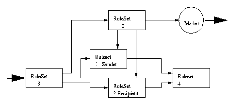

Sendmail (II): Configuración y manejo de Sendmail
Autor: Juan Antonio Martínez Castaño
E-Mail: jantonio@drake.dit.upm.es
Copyright
Este artículo es Copyright 1998 de Juan Antonio Martínez Castaño y se
distribuye bajo las siguientes condiciones:
- Su distribución mediante medios electrónicos es libre, siempre y
cuando se conserve el texto íntegro y en su formato HTML original, haciendo
especial mención a la conservación del mensaje de copyright
- El autor y dueño del copyright cede los derechos de publicación impresa
a Prensa Técnica S.A., autorizando a ésta a realizar las modificaciones al
texto que considere oportunas para su publicación
- La distribución o copia, total o parcial, en cualquier medio impreso por
parte ajena a Prensa Técnica S.A. Está expresamente prohibida
- Ningún particular podrá publicar este fichero en un servidor Web de acceso
público sin el consentimiento expreso del autor y de Prensa Técnica S.A.
Indice:
- Introducción
- El entorno de trabajo de sendmail
- Usando sendmail
- El fichero de configuración
- Reglas de reescritura
- Configurando sendmail
- Resumen. Conclusiones
- Referencias
Entradilla
En el número anterior de Linux Actual se hizo una introducción al
correo electrónico, describiendo el protocolo SMTP, la estructura de un
mensaje de correo, y las extensiones MIME al protocolo. En este artículo
se describe en detalle el funcionamiento y la configuración de sendmail,
describiendo ejemplos reales
En el número anterior se hizo una introducción al modo de
funcionamiento de sendmail como agente de transporte de correo, y de qué
decisiones debía tomar con el mensaje entrante. Recordemos estas funciones
- Recogida de correo procedente de un agente de usuario de correo
o MUA ( elm, pine, Eudora, etc ) o bien de otro sendmail
- Elección de la estrategia de routing del correo: desvio hacia
un agente local, hacia otro sendmail, a través de una linea UUCP, etc
- En su caso, encolamiento del mensaje para un posterior proceso
- Ajustar las cabeceras del correo de manera que sea compatible
con el siguiente agente de transporte de la cadena
- Resolución de aliases, expansión de listas, etc
- Aunque casi no se use más que para debugging, sendmail también
puede ser usado como agente de correo de usuario (MUA)
En este número de Linux Actual describimos las interioridades
de sendmail y cómo este es capaz de llevar a cabo dichas tareas. Del mismo
modo aprenderemos a configurar y a personalizar sendmail de manera que se
adapte a nuestras necesidades. Por motivos de espacio no se puede hacer una
descripción exhaustiva; por ello se recomienda un estido detallado de la
abundante documentación que acompaña a sendmail
Echemos un primer vistazo a los ficheros relacionados con sendmail.
Detallamos aquí la implementación Linux ( especialmente RedHat 5.1 ). En
otros sistemas operativos la distribución puede ser ligeramente distinta
- Binarios y ejecutables
- /usr/bin/sendmail Ejecutable de sendmail
- /usr/bin/mailq Muestra el estado de la cola de
correo pendiente. Es un enlace simbólico a sendmail y
equivale a /usr/lib/sendmail -bp
- /usr/bin/newaliases Recompila la base de datos
de aliases de correo. Equivale a /usr/lib/sendmail -bi
y como en el caso anterior es tambien un enlace simbólico
a sendmail
- Directorios
- /usr/lib/sendmail-cf directorio que incluye
las utilidades de configuración de sendmail
- /etc/mail Directorio donde se guardan los diversos
ficheros de configuración de sendmail. Actualmente muchos
ficheros residen todavía bajo /etc, pero a partir de
la release 9.0 este directorio será el nuevo estándard
- /var/spool/mail Directorio donde se guarda el
correo local
- /var/spool/mqueue Directorio donde se guarda la
cola de mensajes pendientes de envio
- Ficheros
- /etc/sendmail.cf Fichero de configuración de
sendmail
- /etc/aliases Fichero de aliases de correo
- /etc/sendmail.cw
- /etc/sendmail.cT Diversos ficheros de configuración
cuyo uso se describirá posteriormente
- /var/run/sendmail.pid Fichero lock que indica el
process-ID del sendmail que actualmente está en ejecución
- /var/log/maillog Fichero de logging de eventos de
sendmail
Como se ha dicho, la recomendación de sendmail.org es que todos los
ficheros de configuración residan bajo /etc/mail. Esto será obligatorio
a partir de la version 9.0 ( la release actual en el momento de escribir este
artículo es la 8.9.1a )
|
Normalmente sendmail se ejecuta como demonio del sistema. No obstante, también
puede ser lanzado desde inetd
|
|---|
| | |
Sendmail puede funcionar como programa autónomo, arrancado desde
/etc/rc.d/init.d/sendmail, o bien como programa auxiliar desde el
demonio inetd. Cuando el sistema se va a dedicar a servidor de correo
o punto de intercambio de éste, se recomienda la útima opción. Sólo tiene
sentido lanzarlo desde inetd en el caso de estaciones de trabajo en las que
el correo se use raramente
El listado 1 muestra las diversas opciones con que se puede invocar
sendmail. Como veremos posteriormente, muchas de ellas tienen su correspondiente
entrada en el fichero /etc/sendmail.cf. Destacaremos, por su importancia
las siguientes
- -bd Ejecuta sendmail como "demonio" del sistema. Esta
es la manera habitual de ejecución de sendmail.
- -v Pone sendmail en modo "verboso". Sirve para monitorizar
todos los procesos que ejecuta sendmail a la hora de enviar correo:
expansión de aliases, conexión via SMTP con el servidor remoto, etc.
Se utiliza sobre todo para verificar que las conexiones y envio de
correo de nuestro sendmail local se ejecutan correctamente
- -bi Recompila el fichero de aliases. El comando
newaliases es equivalente a esta opción
- -bt Ejecuta sendmail en modo interactivo como expansor de
reglas de reescritura de direcciones. Este método sirve para comprobar
que la configuración que hemos creado para sendmail es correcta. ( en
un apartado posterior se detallan las reglas de reescritura )
- -f user Indica a sendmail que el sender del correo
es el usuario especificado. Sólo los usuarios clasificados en el
fichero de configuración como "trusted" están autorizados para
utilizar este comando
- -dcategoría.nivel Pone sendmail en modo traza. Sendmail
especifica diversos niveles y tipos de trazas, que desafortunadamente
varían de una versión a otra. Consultar la documentación de cada
versión respecto de los niveles de depuración
Parameters:
-Btype Set the body type to type. Current legal values
7BIT or 8BITMIME.
-ba Go into ARPANET mode. All input lines must end with
a CR-LF, and all messages will be generated with a
CR-LF at the end. Also, the ``From:'' and ``Sender:''
fields are examined for the name of the sender.
-bd Run as a daemon. This requires Berkeley IPC. Sendmail
will fork and run in background listening on socket 25
for incoming SMTP connections. This is normally run
from /etc/rc.
-bD Same as -bd except runs in foreground.
-bh Print the persistent host status database.
-bH Purge the persistent host status database.
-bi Initialize the alias database.
-bm Deliver mail in the usual way (default).
-bp Print a listing of the queue.
-bs Use the SMTP protocol as described in RFC821 on standard
input and output. This flag implies all the operations
of the -ba flag that are compatible with SMTP.
-bt Run in address test mode. This mode reads addresses
and shows the steps in parsing; it is used for debugging
configuration tables.
-bv Verify names only - do not try to collect or deliver a
message. Verify mode is normally used for validating
users or mailing lists.
-Cfile Use alternate configuration file. Sendmail refuses to
run as root if an alternate configuration file is
specified.
-dX Set debugging value to X.
-Ffullname Set the full name of the sender.
-fname Sets the name of the ``from'' person (i.e., the sender
of the mail). -f can only be used by ``trusted'' users
(normally root, daemon, and network) or if the person
you are trying to become is the same as the person you
are.
-hN Set the hop count to N. The hop count is incremented
every time the mail is processed. When it reaches a
limit, the mail is returned with an error message, the
victim of an aliasing loop. If not specified,
``Received:'' lines in the message are counted.
-i Ignore dots alone on lines by themselves in incoming
messages. This should be set if you are reading data
from a file.
-N dsn Set delivery status notification conditions to dsn,
which can be `never' for no notifications or a comma
separated list of the values `failure' to be notified
if delivery failed, `delay' to be notified if delivery
is delayed, and `success' to be notified when the
message is successfully delivered.
-n Don't do aliasing.
-O option=value
Set option option to the specified value. This form
uses long names. See below for more details.
-ox value Set option x to the specified value. This form uses
single character names only. The short names are not
described in this manual page; see the Sendmail
Installation and Operation Guide for details.
-pprotocol Set the name of the protocol used to receive the
message. This can be a simple protocol name such as
``UUCP'' or a protocol and hostname, such as
``UUCP:ucbvax''.
-q[time] Processed saved messages in the queue at given
intervals. If time is omitted, process the queue once.
Time is given as a tagged number, with `s' being
seconds, `m' being minutes, `h' being hours, `d' being
days, and `w' being weeks. For example, `-q1h30m' or
`-q90m' would both set the timeout to one hour thirty
minutes. If time is specified, sendmail will run in
background. This option can be used safely with -bd.
-qIsubstr Limit processed jobs to those containing substr as a
substring of the queue id.
-qRsubstr Limit processed jobs to those containing substr as a
substring of one of the recipients.
-qSsubstr Limit processed jobs to those containing substr as a
substring of the sender.
-R return Set the amount of the message to be returned if the
message bounces. The return parameter can be `full'
to return the entire message or `hdrs' to return only
the headers.
-rname An alternate and obsolete form of the -f flag.
-t Read message for recipients. To:, Cc:, and Bcc: lines
will be scanned for recipient addresses. The Bcc: line
will be deleted before transmission. Any addresses in
the argument list will be suppressed, that is, they
will not receive copies even if listed in the message
header.
-U Initial (user) submission. This should always be set
when called from a user agent such as Mail or exmh and
never be set when called by a network delivery agent
such as rmail.
-V envid Set the original envelope id. This is propagated across
SMTP to servers that support DSNs and is returned in
DSN-compliant error messages.
-v Go into verbose mode. Alias expansions will be
announced, etc.
-X logfile Log all traffic in and out of mailers in the indicated
log file. This should only be used as a last resort
for debugging mailer bugs. It will log a lot of data
very quickly.
|
| Listado 1: Opciones de invocación de sendmail |
|---|
Realmente, en funcionamiento normal no utilizaremos mas que dos
opciones en el momento de arranque: el modo normal de invocación -desde
el /etc/rc.d/init.d/sendmail- se ejecuta el comando
/usr/bin/sendmail -bd -q1h que le instruye a sendmail para que se
ejecute como demonio y que procese la cola de correo cada hora. Cada vez
que cambiamos el fichero de alias, deberemos utilizar el comando
newaliases para recomilar dicha database. Algunos administradores
hacen esto de manera automática desde el cron
Hemos mencionado constantemente el fichero de aliases, pero ¿en
qué consiste éste?. No es ni mas ni menos que una tabla de traslación de
direcciones "virtuales" a direcciones reales. El formato de este fichero
está ilustrado en el listado 2.
|
Podemos considerar el fichero .forward como un fichero de aliases
particular del usuario
|
|---|
| | |
Al igual que el fichero de aliases, existe un fichero -opcional-
por cada usuario. Si éste tiene un fichero .forward en su ${HOME}
sendmail interpreta éste como un fichero alias particular y lo procesa.
Evidentemente existen diversas restricciones de seguridad que sendmail
impone a los permisos que pueden tener los ficheros /etc/aliases
y ${HOME}/.forward
#
# @(#)aliases 8.2 (Berkeley) 3/5/94
#
# Aliases in this file will NOT be expanded in the header from
# Mail, but WILL be visible over networks or from /bin/mail.
#
# >>>>>>>>>> The program "newaliases" must be run after
# >> NOTE >> this file is updated for any changes to
# >>>>>>>>>> show through to sendmail.
#
# Basic system aliases -- these MUST be present.
MAILER-DAEMON: postmaster
postmaster: root
# General redirections for pseudo accounts.
bin: root
daemon: root
games: root
ingres: root
nobody: root
system: root
toor: root
uucp: root
# Well-known aliases.
manager: root
dumper: root
operator: root
# trap decode to catch security attacks
decode: root
# Person who should get root's mail
#root: marc
# sample of mail list: note about the :include: syntax
xmame-list: :include:/etc/mail/listas/xmame.list
# sample of program redirection
xmame: | /usr/bin/hypermail
# multiple recipients can be specified in an alias
xmame-owner: jantonio,jrwdegoede@mail.tudelft.fi.de
|
| Listado 2: Ejemplo de fichero /etc/aliases |
|---|
Por último, estudiamos la cola de correo:
Con el comando mailq obtenemos una lista de mensajes pendientes
de envio. En el directorio /var/spool/mqueue podemos observar
ficheros con el formato:
- - dfxxxxxx Cuerpos de los mensajes, sin cabeceras
- - qfxxxxxx Información de proceso de trabajos
- - tfxxxxxx Ficheros temporales de proceso de mensajes
- - xfxxxxxx Ficheros de log de sesion de cada mensaje
Ahora que ya conocemos el comportamiento de sendmail, vamos
a proceder a estudiar y a aprender a configurar dicho sistema.
En el número anterior de Linux Actual se describieron las
diversas razones de la -aparente- complejidad del fichero de configuración.
/etc/sendmail.cf. Veamos a continuación su estructura.
Para ello tengamos a mano nuestro linux y visualicemos dicho fichero.
Podemos dividirlo en diversas secciones:
- Definición de diversas macros y clases ( grupos de tokens )
- Definición de las diversas opciones de funcionamiento
- Descripción de los formatos de las cabeceras que sendmail
debe generar.
- Definiciones sobre la prioridad de los mensajes
- Identificación de los usuarios de "confianza" ( trusted users )
- Declaración de los diversos agentes de transporte de correo
- Declaración de reglas de reescritura de las cabeceras
- Declaración de prioridades
Cada apartado se identifica por una letra. Así tenemos que una línea
que empieza por D corresponde a una declaración de Macros, una M a una
definición de agente de transporte de correo ( mailer ), etc. A continuación
describimos en detalle estas secciones.
- Las opciones de funcionamiento, definen los valores de las
diversas posibilidades de modos de ejecución de sendmail. Algunas de
estas opciones pueden ser re-definidas en línea de comandos, o bien
mediante la opcion "-O option=valor". Se declaran en el fichero
sendmail.cf mediante líneas que empiezan por "O"
- Los formatos de las cabeceras se definen con lineas que empiezan
por "H". Así por ejemplo "HReceived: by $j id $i; $b" indica el
formato del campo "Received" que genera sendmail al pasar un mensaje
a su través
- Los "Trusted Users" son usuarios a quienes sendmail les permite
hacer ciertas cosas que no están -por motivos de seguridad- permitidas.
Un caso típico es el de cambiar la dirección del remitente -con la
opcion "-f" de la línea de comandos- . Sendmail comprueba si el
userid de quien lo invoca corresponde con alguno de estos usuarios
privilegiados, y en caso afirmativo lo autoriza. En el fichero de
configuración se declaran estos usuarios con lineas que empiezan por "T"
- Los agentes de correo son los diversos programas que sendmail
puede invocar para rutar el correo saliente, en función de la
dirección destino de cada mensaje. La definición de un Mailer empieza
por la letra "M". Dejamos su explicación para el apartado donde se
explican las reglas de reescritura.
- Las prioridades se declaran de la forma "Pident=value" donde
"ident" son los textos que aparecen en las cabeceras "Priority: ", y
"value" son valores numéricos que indican la prioridad relativa entre
los diversos identificadores
- Una macro es una asignación de un valor a una variable.
Así por ejemplo:
D$jdit.upm.es
Indica que la variable "j" tiene el valor "dit.upm.es". Este caso
corresponde a una de las variables pre-definidas por sendmail. Las nuevas
versiones de sendmail permiten nombres de variables de más de una letra
expresándolas de la forma ${nombre_de_variable}. El listado 3 indica las
variables pre-definidas para uso interno de sendmail. Algunas de ellas
no son editables por el usuario, pero otras deben ser expresamente
declaradas en el fichero de configuración
- $a Fecha de envio del mensaje en formato RFC822
- $b Fecha actual en formato RFC822
- $c Contador de saltos (TTL del mensaje)
- $d Fecha actual en formato UNIX ctime(2)
- $e (Obsoleto: substituído por la opción SmtpGreetingMessage )
Mensaje de saludo al establecerse la conexión SMTP
- $f Dirección de correo entrante del sender ( from )
- $g Dirección de correo del sender una vez procesada y adaptada
para el mailer que debe recibirla
- $h Direccion destino una vez preprocesada por la RuleSet 0 ( ver
explicación de las reglas de reescritura )
- $i Identificador del mensaje en la cola de envíos pendientes
- $j Nombre DNS oficial ( no dominios virtuales de correo ) de la
máquina donde se ejecuta sendmail
- $k Nombre del nodo UUCP
- $l (Obsoleto: substituído por la opción UnixFromLine ) formato
de la entrada "From" de la cabecera. Por defecto vale "From $g $d"
- $m Dominio de DNS de la maquina
- $n Nombre del demonio de correo para mensajes de error. Por defecto
vale "MAILER-DAEMON"
- $o (Obsoleto: substituído por la opción OperatorChars ) String
que contiene la lista de caracteres que son definidos como separadores
de tokens a la hora de parsear las reglas de reescritura
- $p Process-ID del sendmail en ejecución
- $q Formato de la dirección del remitente
- $r Protocolo usado para aceptar conexiones, usualmente SMTP o ESMTP
- $s Hostname del remitente del correo
- $t Representación numérica de la hora actual
- $u Direccion del destinatario
- $v Versión de sendmail
- $w Nombre oficial de la maquina. Normalmente se verifica que
$j es igual a $w.$m
- $x Nombre completo del remitente
- $z Home del destinatario, si éste es local
- $_ Dirección que sendmail valida como dirección real del remitente
- ${bodytype} Tipo del cuerpo del mensaje ( 7BIT o 8BITMIME )
- ${client_addr} Dirección IP de la máquina que establece conexión
con sendmail
- ${client_name} Nombre autentificado DNS del host que establece
conexión con sendmail
- ${client_port} Puerto por el que se establece la conexión
- ${envid} MsgID tal y como figura en la cabecera del mensaje
- ${opMode} Modo en que está operando sendmail. Definido por la
opción -b de la linea de comandos con que se arrancó éste
|
| Listado 3: Macros predefinidas por sendmail |
|---|
- Una clase es una agrupación de tokens. Puede ser esta
literal, dada por el identificador "CXvalor1 valor2 ..." o bien puede extraerse
dicha agrupación de un fichero externo, en cuyo caso el identificador es
la letra "F". La tendencia actual es a agrupar dichas clases en ficheros, para
modificar lo menos posible el fichero de configuración. Así en lugar de la
declaración anterior, pondremos los campos "valor1,valor2, etc" en un fichero
"/etc/mail/sendmail.cX" y declararemos la clase como "FX/etc/mail/sendmail.cX"
Para referenciar a un token de una clase, diferenciandolo de una
variable, lo expresaremos con la sintaxis $=X
El resto del fichero sendmail.cf corresponde a las definiciones de
las reglas de re-escritura. Para entenderlas hagamos una pequeña introducción.
Normalmente, sendmail no sabe a priori con qué formato le va a dar el
cliente las direcciones de correo del remitente y destinatario. direcciones
como "Juan Antonio <jantonio@dit.upm.es>" y "jantonio@dit.upm.es ( Juan
Antonio Martinez )" son perfectamente válidas y con formatos totalmente
diferentes. Es necesario un primer preproceso para establecer la uniformidad
entre los diversos posibles formatos entrantes al establecer la conexión.
|
La misión fundamental de la Rule Set 3 es uniformizar las direcciones
que el mailer externo proporciona a sendmail
|
|---|
| | |
Una vez que la dirección de correo ha sido uniformizada, sendmail
necesita adivinar qué tiene que hacer con dicho mensaje: esto es, buscar
un MTA adecuado en función de la dirección que ha obtenido.
Además cada mailer tiene sus propios formatos para el destinatario
y el remitente del mensaje. Sendmail debe adaptar este formato interno a los
requerimientos del mailer antes de invocarlo.
Por último , en algunos casos es necesario un post-proceso de las
direcciones para efectos de introducirlos en las cabeceras, efectuar logs, etc.
Las últimas versiones de sendmail incluyen además una serie de conjuntos
de reglas para validar destinatarios y remitentes, aceptar o rechazar el correo,
etc. Son las denominadas check_ rules
Por ello sendmail define una serie de conjuntos de reglas de
re-escritura de direcciones de correo. son las denominadas "rulesets".
cada ruleset viene definido por la letra S y un número que indica la
regla a definir. Una ruleset empieza con una declaración Sn y dura hasta
la siguiente declaración de otra regla. Las principales son:
- Ruleset 3: Preprocesado de la dirección entrante y conversión
a un formato común
- Ruleset 0: Funciones de selección del mailer adecuado
- Ruleset 1: Reescritura de la dirección del remitente
- Ruleset 2: Reescritura de la dirección del destinatario
- Ruleset 4: Post proceso de las direcciones
Estas reglas son usualmente divididas en diversas sub-reglas que
contemplan aspectos específicos de cada una. la figura 1 ilustra el diagrama
de flujo que sigue el proceso de re-escritura de direcciones
Además de las rulesets especificadas, cada definición de cada mailer
incluye opconalmente una serie de reglas que deben ser aplicadas al resultado
de las rulesets 1 y 2, para adaptar las direcciones al mailer. Normalmente
las rulesets 1 y 2 suelen estar vacias, usándose sólo para reescrituras
particulares (Eric Allman dice que "la mejor ruleset 1 es la que no existe...")
|

|
| Figura 1: Diagrama de flujo de las reglas de re-escritura |
|---|
Para procesar una dirección sendmail divide ésta en tokens, utilizando
para ello los separadores definidos en el fichero de configuración. Así
"<jantonio@dit.upm.es>" es tokenizada en "<" "jantonio" "@" "dit" "."
"upm" "." "es" ">"
Cuando invocamos sendmail con la opcion "-bt" entramos en el denominado
modo de "test de reglas de re-escritura": indicando el conjunto de reglas
deseado, y dando una dirección, podemos ver cómo sendmail procesa ésta, y
el resultado obtenido.
En estos momentos estamos ya en condiciones de poder interpretar
la sintaxis de los siguientes elementos del fichero de configuración. Para
ello habremos de entender que las reglas de reescritura se dividen en dos
partes:
- La izquierda ( LHS ) que indica el pattern con el que se debe
hacer matching para aceptar esta regla
- La derecha ( RHS ) que indica cómo debe ser reescrita esta
dirección
- El tercer campo es opcional y se interpreta como comentario,
siendo ignorado por sendmail
- Además hay una serie de simbolos auxiliares:
- $+ Indica una o más repeticiones de un token
- $* Indica cero o más repeticiones de un token
- $- Indica exactamente una aparición de un token
- $X Indica la macro X
- $=X Indica que el token pertenece a la clase "X"
- $~X Indica que el token no pertenece a la clase "X"
- $?X A $| B $ es una expresión condicional que
indica que si la macro -o clase- X está definida usaremos
la expresion A, y si no la B ( el "else" es opcional )
- $n siendo n un número indica el token reconocido
en n-ésimo lugar. solo se utiliza en la RHS de las reglas
- $: Indica que esta regla solo se debe procesar
una vez (RHS)
- $@ Indica que con esta reescritura se ha acabado
el procesado de la ruleset en curso
- $>n (RHS) Indica que se debe ejecutar la
ruleset "n"
- $#xxxx (RuleSet 0) Especifica que se debe utilizar
el mailer xxxxx con el LHS especificado
- $[xxxx] Especifica que el valor xxxx referencia
a un nombre o dirección IP de la que el DNS debe obtener su
valor A ( address ) en lugar de buscar el valor MX ( mail
exchanger )
Como ejemplo, si encontramos la expresión
R$*<$+@$m> $@$2<@$w>
Esta expresión instruye a sendmail a que si encuentra una expresión
del tipo "Juan Antonio <jantonio@drake.dit.upm.es>" , y drake.dit.upm.es
es el nombre de la máquina donde se ejecuta sendmail, reescriba esta dirección
como jantonio<@dit.upm.es> y dé por finalizado el análisis de la dirección
A la hora de procesar una ruleset, sendmail busca sucesivamente cada
LHS hasta encontrar una que hace matching con la dirección dada. Entonces
convierte ésta a su RHS y repite recursivamente la conversión hasta que no
hace matching, o bien la RHS le dice que no debe procesar mas veces esa línea,
continuando entonces con la siguiente regla, o bien retornando si así se lo
especifica la regla
|
La reescritura de direcciones se basa en un barrido secuencial de cada regla
de una RuleSet dada, buscando expresiones cuya tokenización coincide con la
de la dirección que tenemos
|
|---|
| | |
Invocando sendmail con la opción "-bt" podemos jugar con las distintas rulesets
y ver como son reconocidos los tokens y transformadas las direcciones
Las reglas de definición de mailers son ligeramente distintas:
- Todo sendmail debe tener definición de al menos tres mailers:
"prog" como shell para lanzar la ejecución de comandos;
"local" para enrutar mensajes locales; y "error" para indicar a
sendmail qué hacer cuando se produce un error.
- La definición de un mailer tiene el formato:
Mmailer P=programa, F=flags, S=ruleset, R=ruleset, A=arguments, E=eolchars
Donde:
- "mailer" es el nombre que le damos al agente de correo
- "programa es el nombre del ejecutable a lanzar". Si se
especifica "[SMTP]" o "[IPC]" le indicamos a sendmail que se
trata de una conexión SMTP que puede él gestionar directamente
- "flags" son una serie de caracteres que indican las
posibilidades y requerimientos del mailer. Consultar la
documentación de sendmail para encontrar la descripción
completa de dichos flags
- Ruleset S especifica el conjunto de reglas que debe
aplicar sendmail al resultado de la ruleset 1 para ajustar el
valor del sender en el mailer
- Ruleset R indica la regla a aplicar para que el mailer
utilice el resultado de la ruleset 2
- "arguments" indica la linea de comandos con que se
invoca el mailer.
- "eolchars" indica la secuencia de caracteres que identifica
el fin de linea en el mailer
Por ejemplo, una definición extraída de sendmail es la siguiente:
Mlocal, P=/usr/bin/procmail, F=lsDFMAw5:/|@qSPfhn9, S=10, R=20
Msmtp, P=[IPC], F=mDFMuX, S=11, R=21, E=\r\n
Aunque existe una profusa documentación, hoy en día no es de recibo
editar un fichero de configuración "a pelo". Lo normal es partir de uno
por defecto suministrado por el proveedor del sistema operativo, o bien hacer
uso de las utilidades de configuración de que sendmail viene provisto.
|
Sendmail provee de un potente lenguaje de definición de configuraciones
basado en el preprocesador M4
|
|---|
| | |
En efecto. Los desarrolladores de sendmail, han previsto un conjunto
de reglas pre-fabricadas, junto con un lenguaje de macros, que permite que a
partir de un fichero de unas pocas líneas, generar un sendmail.cf completo
y funcional, sin la engorrosa tarea de pensarlo y escribirlo.
Antes de empezar a describir dicho lenguaje, nos aseguraremos de tener
las herramientas adecuadas. Deberemos tener instalados:
- La herramienta de pre-proceso M4
- La utilidad Make de berkeley ( pmake ). El make de GNU no nos
vale en este caso...
- El paquete sendmail-cf. En caso de no tenerlo, lo podremos
instalar desde el CD-Rom
En el directorio /usr/lib/sendmail-cf residen todas las
herramientas de configuración. Encontramos los directorios:
- cf Directorio de trabajo donde residen los ficheros
de configuración maestros. En el directorio se incluyen multitud
de ejemplos, para ser usados a modo de templates
- domain Ficheros de definiciones relacionadas con los
dominios y la resolución de nombres
- ostype Definiciones relacionadas con el sistema operativo,
normalmente referidas a las localizaciones de ficheros
- m4 Conjunto de reglas maestras de generación de todas
las opciones del fichero de configuración
- mailer Conjunto de reglas de definición de los diversos
mailers
- siteconfig Reglas de generación de las diversas opciones
( reglas O ) del sendmail.cf
- feature Macros de generación de las diversas capacidades
del sendmail.cf
- hack Diversas macros para "trucos" y reglas especiales
Para generar un fichero de configuración, el proceso será el siguiente:
- En el directorio "cf" editamos el fichero ".mc" maestro
- Compilamos el fichero ".cf" resultante mediante el comando
"pmake xxxxx.cf" siendo xxxxx el nombre del fichero maestro
en caso de no disponer de la utilidad "pmake" el comando
"m4 ../m4/cf.m4 file.mc > file.cf" hará el mismo efecto
- copiamos el fichero .cf resultante a /etc/sendmail.cf
- relanzamos el sendmail
El listado 4 nos ilustra el fichero de configuración que utiliza
RedHat en sus distribuciones de correo:
divert(-1)
include(`../m4/cf.m4')
define(`confDEF_USER_ID',``8:12'')
OSTYPE(`linux')
undefine(`UUCP_RELAY')
undefine(`BITNET_RELAY')
FEATURE(redirect)
FEATURE(always_add_domain)
FEATURE(use_cw_file)
FEATURE(local_procmail)
MAILER(procmail)
MAILER(smtp)
HACK(check_mail3,`hash -a@JUNK /etc/mail/deny')
HACK(use_ip,`/etc/mail/ip_allow')
HACK(use_names,`/etc/mail/name_allow')
HACK(use_relayto,`/etc/mail/relay_allow')
HACK(check_rcpt4)
HACK(check_relay3)
|
| Listado 4: Ejemplo de fichero de configuración de sendmail |
|---|
Todo fichero de definición tendrá los siguientes campos:
- Una entrada OSTYPE, que defina el sistema operativo. El valor
"unknown" deja al make la opción de escogerlo automáticamente
- Una o varias FEATURE's que definen las funcionalidades que
va a tener esta configuración
- Diversas entradas de declaración de los mailers que va a tener
definidos este sistema. Al menos un mailer debe estar definido
- Declaracion opcional de los diversos "trucos" que utiliza el
sistema. En el ejemplo de RedHat, los hacks definen las diversas
opciones que controlan el acceso y verificación de los remitentes
y destinatarios del correo
- En el caso de querer especificar una línea del sendmail,cf
de manera literal, declararemos la entrada LOCAL_RULESET_XXXX
y a continuación aquello que queramos que figure en el fichero
Por motivos de espacio es imposible detallar todas las opciones,
features, y hacks pre-definidos. Existe un fichero
/usr/lib/sendmail.cf/README que incluye la documentación completa, mas
otro /usr/lib/sendmail-cf/README.check que define los diversos hacks
relacionados con el control del enrutamiento del correo y de las reglas de
aceptación de este, para evitar el denominado "mail spamming" o abuso de
nuestro servidor de correo para el envio indiscriminado de mail. Como siempre,
la recomendación es probar y experimentar antes de dar una configuración por
válida
El estudio y configuración de sendmail es una de las cosas que
distinguen a un auténtico "gurú" de UNIX. Realmente no es difícil, sino que
la versatilidad y potencia de sendmail obliga al administrador a saber
exactamente qué es lo que desea hacer. El estudio comparativo de diversas
configuraciones es obligado.
Hemos dejado a un lado el tema de seguridad. En tiempos Sendmail
fué famoso por los múltiples agujeros que presentaba. Hoy en día solo se
dan problemas cuando el administrador pone una configuración permisiva, o
descuída los permisos de ficheros y directorios. Afortunadamente la
versión 8.9.1 y superiores protestan firme y educadamente de los fallos de
seguridad, obligando al administrador, a corregir dichos errores o a
instruír expresamente a sendmail a obviarlos.
Por otro lado hay que destacar que sendmail depende íntimamente
de la resolución de nombres DNS. De hecho existen unas entradas en las
databases de DNS denominadas MX ( de Mail eXchanger ) que son exhaustivamente
consultadas por sendmail para decidir las rutas a seguir por los mensajes
de correo. Una mala configuración del DNS puede hacer caer drásticamente
el rendimiento de nuestro sistema de correo, o lo que es peor, hacer que este
no funcione en absoluto.
Si los lectores lo desean, dedicaremos un futuro número a una
explicación detallada de todas las opciones de configuración de sendmail,
Una última nota: en el número anterior se dijo que el RFC822 no
permite caracteres de 8 bits en las cabeceras. Si bien esto es cierto, existe
un RFC que describe como se aplica el concepto de extensiones MIME para
enviar caracteres de 8 bits en dichas cabeceras, manteniendo las reglas del
RFC822
Puesto que el correo electrónico es incluso más antiguo que InterNet, está
profundamente documentado, existiendo una ampila bibliografía y referencias
sobre el tema. Indicamos aquí alguna de las más relevantes:
Referencias sobre TCP-IP y SMTP
- Douglas E. Comer
"Internetworking con TCP-IP" Tercera Edición ( tres volúmenes )
Prentice Hall international
ISBN 0-13-474321-0
http://www.phall.com
( una colección que todo administrador de sistemas debe tener en su
biblioteca informática )
Referencias sobre Sendmail
- Eric Allman,Bryan Costales, Neil Rickert
"Sendmail" Segunda edición
O'Reilly Associates, Inc
ISBN 1-56592-056-2
http://www.ora.com
( considerado como "la biblia de sendmail" es el manual oficial
-reconocido como tal por el creador de sendmail- )
RFC's
- Consultar el fichero indice incluído en el CD-Rom
Sendmail Home Page && ftp site
- http://www.sendmail.org
- ftp://ftp.sendmail.org/pub/sendmail
Grupos de News y listas de correo
- news:comp.mail.sendmail
- mailto:majordomo@lists.sendmail.org
FAQ && Tutorials de sendmail
- http://www.informatik.uni-kiel.de/~Eca/faqs/sendmailv8.html
- http://www.wcmh.com/uworld/archives/95/tutorial/008/008.txt.html